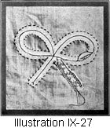

1917—American Dressmaking Step by Step
by Mme. Lydia Trattles Coates
Chapter 9—Finishing Work
Lesson 206—Position of Buttonhole
The buttonhole may be made lengthwise or crosswise as best suits the line of the garment and the position of the button. The main points are that the buttonhole be well made and does not stretch open. Buttonholes should be made usually on the right-hand side of a woman's garment, so the closing is from right to left. The size is generally about 1/8 of an inch larger than the button to be used.
 Lesson 207—The Plain Buttonhole (Illustrations IX-1 and 2)
Lesson 207—The Plain Buttonhole (Illustrations IX-1 and 2)

To Make the Plain Buttonhole
- Decide the length and position of the buttonhole and mark the place with a colored thread.
- Use a single thread, a little heavier than that used on the garment, and long enough to make the entire buttonhole without a break.
- Begin at the back of the buttonhole, working from left to right or from right to left, and make the stay line with very small running stitches around the mark which shows the length and place of the buttonhole. The stay line is not to be so close to the buttonhole mark that later the buttonhole can not be cut without cutting the stay line, nor is it to be so far from the buttonhole mark that after the buttonhole is cut a deep stitch is necessary to catch the stay line with the buttonhole slash. Do not cut or break the thread, as the work is continued with this same thread.
- After the stay line is in, cut the buttonhole.
- With the same thread used for the stay line, overcast the buttonhole, bringing the needle out under the stay line. Overcast quite closely, keeping the stitches neat and straight, not crowding each other. Again, do not break the thread.
- Begin at the back of the buttonhole and place the needle half its distance through the slit of the buttonhole below the stay line.
- At this stage please study the position of the hand. Use the thumb and first finger to hold the needle. Use the middle finger for the thimble finger. The thread is thrown over the needle with the fourth finger of the right hand. Because of its length, shape, and positions this fourth finger grasps the thread under and between the first and second joints, and without changing the position of the hand one can make buttonholes very rapidly. If working from left to right, throw the thread over the needle toward the left and draw the thread under the needle toward the right, or if working from right to left, throw the thread over the needle toward the right and draw the thread under the needle toward the left.
- Draw the needle through, drawing the thread tightly so that it makes a tight purl edge.
- Continue the work in this same manner and finish the corners with either a cartwheel end or barred end.
- If either a barred or cartwheel end is used to fasten the thread when the buttonhole is finished, fasten with the Loop Stitch taken twice in the same place at the underside of the buttonhole.
Lesson 208—Barred Ends
To make barred ends, bring the thread from underneath the buttonhole and take two short straight lengthwise stitches at the end of the buttonhole. This forms the bar. Overcast this barred thread, bringing the stitch through both folds of the material on which the buttonhole is made.
Lesson 209—Cartwheel Ends
Cartwheel Ends are made by crowding the stitches into the end of the buttonhole, and spreading the outside edges. Be careful, however, that the stitches are not crowded so much that they lie over each other, as this makes a clumsy appearance.
Lesson 210—French Buttonhole (Illustration IX-3)
The French Buttonhole is very easy to make. Follow all of the instructions which have just been given for the preparation of the plain buttonhole. In the working of the French Buttonhole:
- Begin at the lower left-hand end of the buttonhole. Place the needle through the slash with the point coming out just below the stay thread.
- Draw the needle all the way through. Do not draw the thread tightly, but leave a small loop which stands with a half twist.
- Place the needle back of the loop with the needle pointing toward you, and draw the thread through, drawing upward and tightly. This gives a beautiful purl edge.
Lesson 211—The Tailored Buttonholes (Illustration IX-4)
To Make the Tailored Buttonhole
- Mark the exact place and length of the buttonhole with a colored thread. The Tailored Buttonhole should always be made crosswise of the garment.
- Put in the stay line. The stay line should follow the shape of the finished buttonhole, which will be barred at the back and an eyelet in front.
- Cut the buttonhole. Cut all of the way to the end of the marked thread and then clip the material inside of the eyelet so a good shape can be secured. If the material is very heavy it is sometimes necessary to trim out a little of the material so that the eyelet will be smooth. There are regulation scissors for cutting the Tailored Buttonhole.
- If a very firm edge is desired for the buttonhole, make a foundation for the edge, either by taking a few strands of thread and waxing them together, or use a very small round tailors' braid and catch to the cut edge of the buttonhole with loop stitches. (Lesson 241.)
- The buttonhole is then worked the same as the Plain Buttonhole (Lesson 207). When working the front of the buttonhole a stiletto should be used to shape the eyelet.
- The back of the buttonhole should be finished either with a bar tack (Lesson 220) or an arrow head (Lesson 218).
Lesson 212—The Bound Buttonhole (Illustrations IX-5 and 6)
To Make the Bound Buttonhole
- Mark place and length of buttonhole slash.
- With colored basting thread make a row of stitches on the marked line.
- Cut the facing or binding one inch longer than the slash is to be cut, and cut it two inches wide. If the facing or binding is not cut on the bias, it must be cut on exactly the same grain, matching the warp and woof threads of the facing with the warp and woof threads of the garment.
- Baste the center of the facing to the center of the buttonhole mark. Baste the right side of the facing to the right side of the garment, entirely covering the marking of the buttonhole.
- Turn the garment to the wrong side, where the marking for the slash now shows and make another row of basting stitches on the same line so that they will show through to the right side of the garment.
- Machine stitch around the row of bastings 1/16 of an inch from the slash mark.
- With a very sharp knife or scissors cut the buttonhole to within 1/8 of an inch or more of the size marked, cutting through both facing and garment, then cut diagonally to the corners of the stitching, being careful not to cut the machine stitching.
- Remove all basting threads.
- Draw the facing through the slash to the underside of garment. As nearly always a welt appearance is desirable, let the upper facing drop down about 1/16 of an inch, and the lower facing extend upward about 1/16 of an inch. Baste this extension exactly on the seam line.
- Turn the work to the underside. Trim the edges of the facing to the desired width and turn under. Slip stitch the turning exactly over the stitched seam line, or hem lining over raw edges of binding. (Illustration IX-6.)
Lesson 213—The Faced Bound Buttonhole (Illustrations IX-7 and 8)
To Make the Faced Bound Buttonhole
- Follow steps 1 to 8, inclusive, of the Bound Buttonhole.
- Draw the facing through the slash to the underside of the garment, drawing it back to the seam line, and baste.
- Turn the work to underside and hem lining over raw edge of facing or binding. (Illustration IX-8.)
FASTENINGS
Lesson 214—Sewing on Buttons
Examine the button and see whether there are holes through which to fasten it to the garment, or whether it is sewed on through a shank. Use a heavy thread and if possible use one strand, as a double thread twists when coming through the button, and often gets tangled. However, if the thread is not strong enough it may be doubled.
To Sew on Buttons (Illustration IX-9)
- After the buttonhole or loop has been made, bring the garment together exactly as it is to be closed and mark the place for the button.
- Place the button over the mark. Fasten the thread with two or three secure back stitches under the material.
- If there are holes in the button, sew through each of them, either across the button, or from side to side, keeping a pin under the threads to allow freedom for the button. If there is a shank on the button, sew through the shank, being careful not to draw the stitches too tightly.
- When the button has been sewed securely to the garment, wind the remaining amount of thread around the threads which hold the button to the garment, winding between the button and the material.
- Fasten the thread with two or three back stitches on the underside of the material.
Lesson 215—Hooks and Eyes
In sewing on hooks and eyes, it is better to use a strong single thread than to have a fine double thread. Eyes are usually sewed on so their edge will extend about 1/8 of an inch beyond the edge of the garment. Hooks are usually sewed on so the edge of the bill comes about 1/8 of an inch inside of the edge of the garment. In this way, the garment will be neatly closed and will not gape.
To Sew on Hooks and Eyes (Illustration IX-10)
- Sew the hooks through the rings and over the bill, using either the Over and Over Straight Stitch (Lesson 38), or the Buttonhole Stitch (Lesson 253).
- Sew the eyes through the rings and over the sides, using either the Over and Over Straight Stitch or the Buttonhole Stitch.
Lesson 216—Loops
Loops, to take the place of eyes through which to fasten the hooks, are of two kinds: the Whip Loop and the Buttonhole Loop.
To Make the Whip Loop (Illustration IX-11)
- Use a double thread, and fasten securely on the underside of the garment.
- Draw the thread through to the right side of the garment and take a stitch upward the length you desire the loop to be, leaving the thread very slack.
- Take a stitch wringing the needle out at the exact place where you brought the thread through at first.
- Draw the thread through again in the same manner.
- Whip the loop, allowing the eye of the needle to pass under the thread first, and whip close enough so that there is no space between the whip stitches. Do not, however, crowd these stitches so that they fall across each other.
- Fasten the thread on the underside of the material with a secure back stitch.
Lesson 217—The Buttonhole Loop
To Make the Buttonhole Loop
- Use a double thread, and fasten it securely on the underside of the material.
- Draw the thread through to the right side, and take a stitch upward the length you desire the loop, keeping the thread very slack.
- Bring the thread back under the material to the place where the thread was first brought through, and take another stitch in the same manner as the first one.
- Hold thread down with thumb of left hand, forming a loop.
- Let the eye of the needle fall under the thread first and push it through the loop with the thimble against the point of the needle.
- Draw the thread tightly, and when at the end of the loop, fasten on the underside of the material with firm back stitches.
ORNAMENTAL TACKS
Lesson 218—The Arrow Head (Illustration IX-12)
To Make the Arrow Head
- Run a colored thread the exact shape and in the place where the Arrow Head is to be.
- Bring the thread out from the underside of the work, at the lower left-hand corner. (Fig. I.)
- Carry the thread upward to the point of the angle, taking a very short, straight stitch under the Arrow Head. (Fig. I.)
- Carry the thread downward to the right-hand corner and take a straight stitch underneath, bringing the point of the needle out at the right of and as near as possible to the place where the thread was first brought through. (Fig. 2.)
- Carry the thread upward and take a short, straight stitch across and underneath the top of the Arrow Head. Place the needle so that the thread falls outside of the stitches first made, and so the point of the needle comes outside of the left-hand diagonal thread. (Fig. 3.)
- Carry the thread downward to the right-hand end of the Arrow Head, placing the needle to the left of the thread at that point and bringing it out to the right of the left-hand diagonal stitches. (Fig. 4.)
The stitches at the top of the work are all taken outside of the previous stitches, while the stitches at the lower part of the work are taken inside of all preceding stitches. Fig. 5 shows the finished Arrow Head.
Lesson 219—The Crow's-Foot (Illustration IX-13)
To Make the Crow's-foot
- Make the shape of the Crow's-foot with tailors' chalk.
- Begin at lower left-hand corner and carry thread upward, taking a very short, straight stitch across the top point of Crow's-foot. (Fig. A.)
- Turn the work and take a very short stitch across the lower right- hand point as shown in Fig. B.
- Make a short, straight stitch across the lower left-hand point. (Fig. C.)
- Continue taking each stitch just inside of and below the previous one. (Fig. D.)
- Fig. E shows the completed Crow's-foot.
Lesson 220—The Bar Tacks (Illustration IX-14)
To Make the Bar Tacks
- Fasten the thread on the underside of the material.
- Bring the thread through to the right side of the material.
- Carry the thread upward just the length of the Bar Tack. If one thread does not make the bar foundation heavy, bring the thread through again in the same manner.
- Whip over and under the bar thread, catching through the material with each stitch.
MARKING AND STAY TACKS
Lesson 221—Tailors' Tacks (Illustration IX-15)
Tailors' Tacks are used in all construction work. They should always be put into the garment before it is cut out, and not afterward.
To Make Tailors' Tacks
- Thread a double thread, but do not knot it.
- Take a straight-stitch through a perforation, and through both thicknesses of the material.
- Draw the thread through, leaving an end at least one inch long.
- Place the needle again through the same perforation in the same manner as you did in Step 2.
- Draw the thread through, leaving a one-inch loop. Cut the thread one inch from the loop toward the needle.
- Proceed to the next perforation in the same manner. In long rows of perforations, you may draw the thread from one perforation to the next without cutting each time, until the Tailors' Tacks are all finished.
- After the garment has been cut out, and all pins removed, clip the threads between the folds of the material and then remove the pattern.
- In sheer materials repeat this process, making two loops, as one loop does not always stay in.
Lesson 222—The Loose French Tack (Illustration IX-16)
A French Tack is a number of threads used to join two portions of a garment, as a tunic fastened to the garment to keep it from hanging away.
The loose French Tacks are made as follows:
- Several strands of thread are used in a large needle.
- The needle is brought up from the under portion of the garment through to the upper portion which is to be joined, leaving about one-inch end of the thread to be tied on the under portion of the garment, also leaving enough extra thread to give the garment whatever ease may be required between the folds of the material.
- A short stitch is taken through the upper portion of the garment and back through to the underside of the upper portion only of the material.
- The French Tack is then covered with loop or buttonhole stitches. (Lesson 253.)
- Bring the thread through to the under portion of the garment, and the end of the thread which was left to tie is carefully tied to the thread which is now in the needle.
Lesson 223—The Close French Tack (Illustration IX-17)
To Make the Close French Tack
- Do all of the work from the right side of the garment.
- Take a double thread and bring the needle through from the underside of the material. Take three or four very fine, short, straight stitches over each other.
- Pass the needle back under the material.
- Bring the needle through to the right side about one inch straight across from where the first stitches were taken and take the same number of over and over stitches in the same manner, again carrying the thread underneath to the underside.
- Take the next stitch directly opposite where the third series of stitches were taken and then bring thread through to underside again.
- Carry the thread downward to the place where it started from and tie the ends carefully together.
FINISHING CORNERS
Lesson 224—The Square Corner
To Make the Square Corner
- Turn all edges.
- Either match the outside edges and finish, or, if your material is very thick, cut out underneath the portion which is to fold up and over the other turning. See Illustration IX-18 for correct manner and place to trim.
Lesson 225—The Mitered Corner
To Make the Mitered Corner
- Make turnings.
 Fold lower edge of the hem as shown in Illustration IX-19.
Fold lower edge of the hem as shown in Illustration IX-19.- Cut away all of the corner of the material up to 1/8 of an inch of the crease.
- Bring up the lower part of the hem and mark the diagonal line of the corner.
- Trim away all of the corner material under the hem fold up to 1/8 of an inch of the diagonal line.
- Blind stitch the mitered corners together.

Lesson 226—The Diagonal Fold Corner (Illustration IX-20)
To Make the Diagonal Fold Corner
- Turn the hem square with all edges meeting.
- Fold under the end of the bottom of the hem.
- Fold up the hem and finish with blind stitch.
INSERTIONS AND EDGINGS
Lesson 227—Setting in Lace Insertion (Illustration IX-21)
If the lace is to be set in on a straight edge, a very satisfactory way is as follows:
- Hem the edges of the material with a very narrow hem. It should be 1/32 of an inch wide, or not over 1/16 of an inch at widest. Hem with small, fine hemming stitches.
- Hold the right side of the lace away from you and just enough higher than the hem so the meshes can easily be seen, and picked up with the needle.
- Whip through every mesh of the insertion, being careful not to pull the thread too tightly.
- When one side is finished, join the insertion to the opposite edge in the same manner.
- When finished, press out smoothly, and it will look as if the lace had been woven into the material.
In setting in embroidery insertion, do the whip stitch work with embroidery cotton to match the texture of the embroidered work.
Lesson 228—Setting in Insertion for Less Important Work
On work of less consequence, the very narrow hem can be put in by machine, and the lace whipped on by hand. Of course, any machine work on a very dainty garment greatly reduces its value.
Lesson 229—Setting in Insertion for Very Quick Work (Illustration IX-22)
There are machine attachments with nearly all machines, which will both hem and set in lace in one operation, and to the busy woman it is a great help for unimportant work. If you do not possess a machine attachment of this character, and there is a reasonably heavy edge on your insertion, proceed as follows:
- Turn the edges of the garment to the right side, with a very narrow turning.
- Set the edge of the lace over the turned edge of the material, baste carefully and stitch securely with the machine. This, of course, is not fine, high-class work, but it is used to advantage on inexpensive garments.
Lesson 230—Whipping on Lace Edging
The Roll Hem is usually used in connection with a ruffle or with lace edging.
To Put Lace Edging on a Roll Hem (Illustration IX-23)
- Always make the Roll Hem toward you. For instructions to correctly make the Roll Hem, see Lesson 91.
- Hold the lace edging away from you, holding it just above the edge of the roll, so the meshes can be seen easily.
- Whip through every mesh and under the roll hem, holding the lace full and the roll tight, and drawing the thread tight.
Lesson 231—To Full on Lace
One does not gather lace edging unless it is real lace. Draw the manufacturer's thread which is found in all manufactured lace edging. This will gather the lace to any fulness desired. Then whip each mesh of the lace to the roll hem, exactly as directed in Lesson 230.
Lesson 232—Joining Lace (Illustration IX-24)
In joining lace edging and insertion, hold the edges together, and whip through every mesh of the insertion and lace.
In Fulling On Lace Edging to Lace Insertion (Illustration IX-25)
Draw the manufacturer's thread at the top of the edging, and whip as many meshes of the ridging into each mesh of the insertion as it is required to give the lace the desired fulness. If now and then a few meshes of the edging are skipped, the effect when finished will not be of even fullness.
Lesson 233—Setting in Lace Designs
In setting in lace designs, great care must be taken to keep the goods perfectly flat while basting on the design, otherwise it is apt to draw up and away from the material when finished.
TO SET IN A DESIGN (Illustrations IX-26 and 27)
- Stamp or outline on the material the design to be made.
- Baste the material on heavy paper or thin oilcloth, basting outside of the stamped design.
- In using lace insertion, baste the outside edges perfectly even and flat, giving no attention, at present, to the inside line. Baste with very close stitches. If the material is basted onto oilcloth, be careful not to catch the threads through the oilcloth.
- When the outside is carefully basted, draw the thread on the inside edge of the insertion until the inside edge lies perfectly flat with the inside line of the design.
- Distribute the fulness as evenly as possible, and baste down all edges closely and carefully. (Illustration IX-26.)
- Clip the basting threads, which hold the goods to the paper or oilcloth, whichever has been used, and remove the bastings.
- Turn the work over to the underside and flip the material between the two rows of bastings.
- Trim the material down to a narrow turning close to both edges of the bastings.
- Clip the remaining material wherever there is a decided curve or angle.
- Roll the edges into a very tight roll hem, rolling toward the underside of the material. Whip through every mesh of the insertion used for the design. (Illustration IX-27.) This gives a beautiful finish on the underside, and a perfect effect on the right side.
Many people prefer, in Steps No. 3 and No. 4 of this lesson, to whip through each mesh of the insertion instead of basting, and in Step No. 10, to roll the hem over the whip stitch, again catching through the meshes as they roll the hem. This will hold the design in place more securely, but usually the material will outwear the design, anyway, and the effect on the wrong side is not quite so good.
Lesson 234—Setting in Medallions (Illustration IX-28, 29, and 30)
Medallions having a lace mesh edge are put on exactly as designs are set in. (Illustration IX-28.) If the medallion is made of embroidery with an open or irregular edge, put it on in the same manner. If the medallion is made of embroidery with a close edge, or has no meshes, proceed as follows:
- Baste the material on heavy paper or thin oilcloth.
- Baste the design on the exact place of the material where it is to appear, taking care not to baste too close to the edge of the medallion, as you must leave the edges around the medallion free to turn. Keep the work perfectly flat.
- Catch down the outside edges of the medallion, using either very fine running stitches or very close slant stitches. (Illustration IX-29.)
- Remove the material from the paper or oilcloth.
- Trim the material on the wrong side down to a narrow turning, under the medallion.
- Either roll the hem as for setting in lace designs, or turn the edges of the material perfectly flat toward the right side and under the edge of the medallion, and whip very closely around the entire edge of the medallion. (Illustration IX-30.)
Lesson 235—Veining and Seaming (Illustration IX-31)
Many people desire their garments to be joined together with veining or seaming. This veining or seaming comes with a narrow margin of lawn or linen at both of its edges. These edges are joined to the garment with the ordinary French seam (Lesson 60), or with a plain seam double stitched (Lesson 72), or with a roll seam (Lesson 63).
If the French Seam is used, make the seam just as narrow as possible and still hold the garment securely together. In addition to following closely all the rules for French seaming (Lesson 60), keep in mind that the final seam line must be at the exact woven edge of the veining.
If the Plain Seam is used, be careful that the first row of stitches comes exactly at the woven edge of the veining. Press the edges of the seam and the veining away from the veining. Stitch on each side of the seam and close to the veining, following all of the rules for the Double Stitched Plain Seam (Lesson 72).
HEMSTITCHING
Lesson 236—Plain Hemstitching (Illustration IX-32)
To Make Plain Hemstitching
- Decide the exact width of the uniform hem to be hemstitched.
- Draw the first thread for the hemstitching at the exact line where the top of the hem is to be.
- Draw all of the other threads above the thread which marked the top of hem.
- When the required number of threads have been drawn, turn a flat uniform hem and baste it down carefully. Be careful that the top of the hem comes to the first thread drawn.
- Fasten the thread under the hem.
- Hold the hem downward and toward you. Begin at the left-hand end and work toward the right. Decide the number of threads to be in each group of hemstitching.
- Bring the thread to the right and across the front of this group. Hold the thread in the form of a loop.
- Point the needle to the left and pass it back of the threads, and out to the left of the group of stitches, drawing it through the loop.
- Draw the thread tightly and take a small hemming stitch at the right of the group of stitches. Take the hemming stitch through the hem only.
- With the point of the needle, divide off exactly the same number of threads of the material to the right of where the thread now falls. Pass the needle back of these threads, and continue with the same stitch explained in Steps 8 and 9 of this lesson.
Lesson 237—Double Hemstitching (Illustration IX-33)
To Make the Double Hemstitching
Hemstitch both the edges exactly the same, with the exception that since there is a hem on only one edge through which to fasten the thread, on the opposite edge the hemming stitch is taken through the material. This stitch holds the thread straight from top to bottom.
Lesson 238—Serpentine or Zigzag Hemstitching (Illustration IX-34)
To Make the Serpentine Hemstitch
- Hemstitch the line of threads nearest the hem (Illustration IX-32).
- On the opposite edge hemstitch in exactly the same manner, except that the needle passes back of half of the threads of the division where the thread comes through, and half of the threads from the next division where the needle is placed each time. This gives the zigzag effect from which the hemstitching derives its name, Serpentine.
Lesson 239—Machine Hemstitching (Illustrations IX-35 and 36)
To Make Machine Hemstitching
- Place a soft, thick piece of blotting paper between the two pieces of material to be joined. If the blotting paper is thin, use two thicknesses of it.
- Stitch together on the machine, using a sufficiently loose tension and regulating the size of the stitches according to the width of the hemstitching desired. (Illustration IX-35.)
- When the seam is stitched, pull the blotting paper away.
- Press the seam open, pressing back each edge of the underside. (Illustration IX-36.)
- Stitch each turned-back edge flat with machine stitching placed close to the hem, trim the edges and roll, whipping close to the line of hemstitching. Or, if the hemstitching is to be at the top of a hem, bring the fold of the top of the hem-line to the hemstitching and baste over the raw edge of the seam. Finish with the Straight Hemming Stitch (Lesson 49).